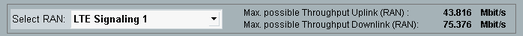

DAU measurements can be performed for connections established via signaling applications.
Via "Select RAN" at the top of the "Data Application Measurements" dialog, you can select a signaling application. As a consequence, the expected maximum throughput for this signaling application is displayed and quick access softkeys for this signaling application are activated.

The selection is mainly a convenience function. For quick access softkeys, see "Signaling Parameter (softkey)" and "... Signaling (softkey)".
Select an installed signaling application instance. Only applications supporting DAU tests are listed, e.g. LTE Signaling.
Remote command:Display the expected maximum UL/DL throughput resulting from the current signaling application settings.
Remote command:n/a, use the commands provided by the signaling application.